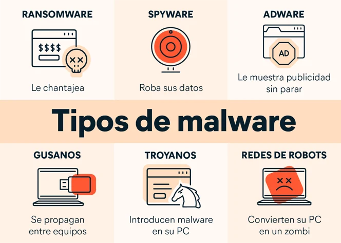

Software Antivirus/Antimalware: Instala y mantén actualizado un software antivirus confiable en todos tus dispositivos, incluyendo computadoras de escritorio, portátiles y dispositivos móviles. Asegúrate de programar análisis regulares y de mantener la base de datos de virus actualizada.
Firewall: Habilita el firewall de tu sistema operativo y, si es posible, utiliza un firewall de red adicional para proteger tu red doméstica. Un firewall puede ayudar a bloquear el acceso no autorizado a tu dispositivo desde Internet y a prevenir la propagación de malware.
Actualizaciones de Software: Mantén actualizado tu sistema operativo y todas las aplicaciones y programas instalados en tus dispositivos. Las actualizaciones de software suelen incluir parches de seguridad que corrigen vulnerabilidades conocidas y pueden ayudar a protegerte contra el malware.
Descargas Seguras: Ten cuidado al descargar archivos y software de Internet. Descarga solo desde fuentes confiables y evita sitios web sospechosos o de dudosa reputación. Verifica que los archivos descargados estén libres de malware utilizando un antivirus antes de abrirlos.
Correo Electrónico Seguro: Ten precaución al abrir correos electrónicos de remitentes desconocidos o sospechosos. No hagas clic en enlaces ni descargues archivos adjuntos de correos electrónicos no solicitados, ya que podrían contener malware.
Navegación Segura: Utiliza un navegador web seguro y mantén desactivadas las opciones de ejecución automática de contenido potencialmente peligroso, como JavaScript y Flash. Evita visitar sitios web no seguros o sospechosos que puedan contener malware.
Conciencia y Educación del Usuario: Educa a los usuarios sobre las prácticas seguras en línea y la identificación de posibles amenazas de malware, como los mensajes de phishing, los anuncios emergentes maliciosos y las descargas falsas. Fomenta la precaución al hacer clic en enlaces o descargar archivos de Internet.
Copias de Seguridad: Realiza copias de seguridad regulares de tus archivos importantes en un medio de almacenamiento externo o en la nube. En caso de que tu dispositivo se vea comprometido por malware, podrás recuperar tus datos sin perderlos.
Uso de Contraseñas Seguras: Utiliza contraseñas fuertes y únicas para todas tus cuentas en línea y cámbialas regularmente. Evita el uso de contraseñas débiles o comunes que puedan ser fácilmente comprometidas por malware o ataques de fuerza bruta.
Análisis Periódicos: Realiza análisis periódicos de tus dispositivos en busca de malware utilizando herramientas antivirus y antimalware. Si sospechas que tu dispositivo está infectado, escanea y limpia el sistema lo antes posible para evitar daños adicionales.
